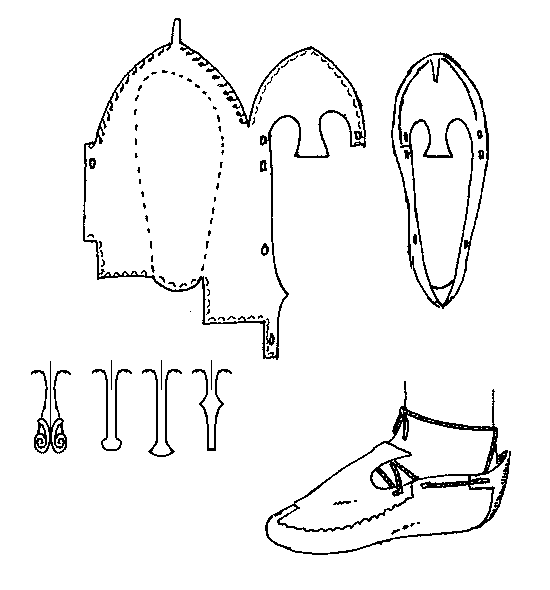

This type of shoe is made from a single piece of thin leather (pig, deer, sheep, goat, horse, ox or calfskin), and has a decorative "tongue" that stretches up the instep, and distinctive design and decorations.
The 'tag' on the tip of the shoe can be up to 5 cm long, and is bent over and sewn up the vamp along the centerline, possibly with a running stitch. The general seams are edge-edge, and while I don't have sufficient information to determine the type of stitching, I would suggest (based on the Lucas Type 2) that this be sewn with a tunneled running stitch, inside the shoe. Thread is either gut or sinew. The stitches are very fine and close together.
The shoe may be covered with decorative designs, including a number of incised geometric patterns. The decorative "tongue" doesn't seem to have any standardization. Those shown above are simply minimalist examples of what is possible. The heel is also decorated, often in a fashion that reflects that of the tongue.
The lacing is a guess.
This design is based on a description found in Lucas and Hald.
Footwear of the Middle Ages - Historical Shoe Designs/Number 1, by I. Marc Carlson.
Copyright 1996, 1998, 1999
This page is given for the free exchange of information, provided the Author's Name is
included in all future revisions, and no money change hands, other than as expressed in
the Copyright Page.